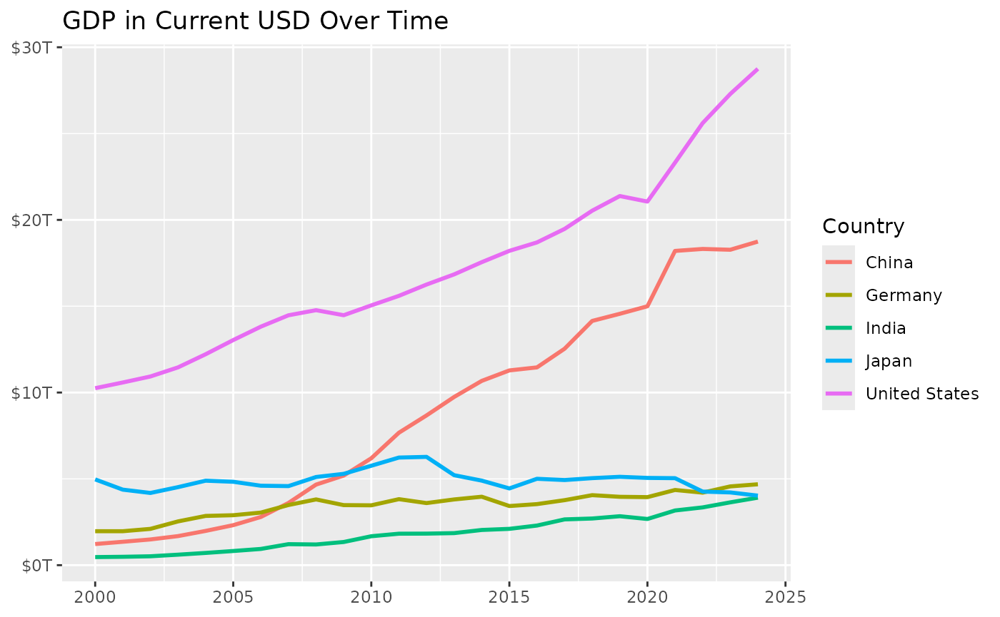
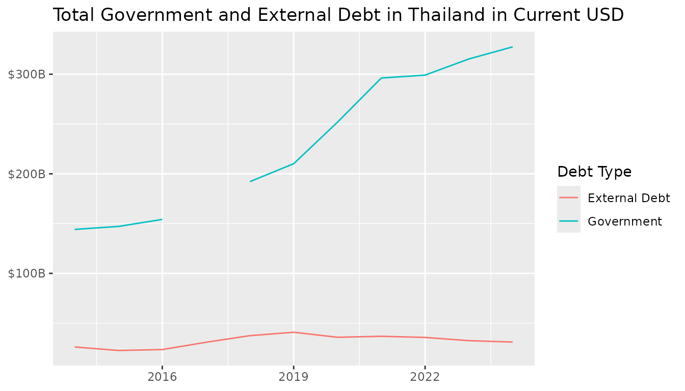
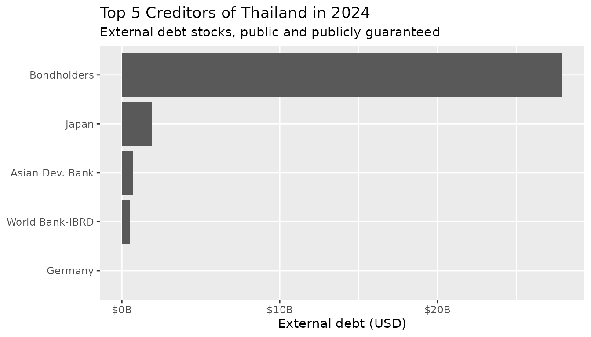

Introducing the EconDataverse: A Universe of R Packages for Economic Data
Source:vignettes/articles/introducing-the-econdataverse.Rmd
introducing-the-econdataverse.RmdThe Challenge of Fragmented Economic Data
Economic data is essential for research and policy analysis, yet accessing it efficiently through R has been a persistent challenge. Data scientists routinely spend more time acquiring and cleaning data than actually analyzing it. For economists and policymakers, especially those in developing countries, this creates real barriers: expensive commercial data subscriptions, time-consuming manual processing, and delays in evidence-based decision-making.
The EconDataverse project, supported by the R Consortium ISC Grant, addresses these challenges by creating a unified ecosystem of R packages that provide consistent, tidy access to major economic data sources. Each package targets a specific data source while sharing a common design philosophy: consistent function naming, tidy data formats, and cross-source compatibility. The result is significantly less time spent on data acquisition and preparation.
You can install the meta-package, which provides access to all implemented data sources and core helper packages, from CRAN:
install.packages("econdataverse")Loading the package attaches all component packages in one step:
library(econdataverse)
#> ── Attaching core EconDataverse packages ─────────── econdataverse 0.1.2.9000 ──
#> ✔ econdatasets 0.1.0 ✔ oecdoda 0.1.0
#> ✔ econid 0.0.3 ✔ owidapi 0.1.1
#> ✔ econtools 0.1.0 ✔ uisapi 0.1.1
#> ✔ imfapi 0.1.2 ✔ wbids 1.1.3
#> ✔ imfweo 0.1.0 ✔ wbwdi 1.0.3We additionally use the following packages for data manipulation and visualization:
Core Packages
The econdataverse currently includes the following packages:
| Package | Data Source | Description |
|---|---|---|
wbwdi |
World Bank | World Development Indicators |
wbids |
World Bank | International Debt Statistics |
imfweo |
IMF | World Economic Outlook |
imfapi |
IMF | International Monetary Fund API |
owidapi |
Our World in Data | Long-term economic and social indicators |
uisapi |
UNESCO | Education and research statistics |
oecdoda |
OECD | Official Development Assistance |
econid |
— | Standardized country/region identifiers |
econtools |
— | Common economic data utilities |
econdatasets |
— | Publicly hosted preprocessed datasets |
Let’s see how these packages work in practice.
Example: Accessing World Development Indicators
Let us fetch GDP in current USD for a selection of countries:
gdp_data <- wdi_get(
indicators = "NY.GDP.MKTP.CD",
entities = c("USA", "CHN", "DEU", "IND", "JPN"),
start_year = 2000,
end_year = 2024
)
gdp_data
#> # A tibble: 125 × 4
#> entity_id indicator_id year value
#> <chr> <chr> <int> <dbl>
#> 1 CHN NY.GDP.MKTP.CD 2000 1.22e12
#> 2 DEU NY.GDP.MKTP.CD 2000 1.97e12
#> 3 IND NY.GDP.MKTP.CD 2000 4.68e11
#> 4 JPN NY.GDP.MKTP.CD 2000 4.97e12
#> 5 USA NY.GDP.MKTP.CD 2000 1.03e13
#> 6 CHN NY.GDP.MKTP.CD 2001 1.36e12
#> 7 DEU NY.GDP.MKTP.CD 2001 1.97e12
#> 8 IND NY.GDP.MKTP.CD 2001 4.85e11
#> 9 JPN NY.GDP.MKTP.CD 2001 4.37e12
#> 10 USA NY.GDP.MKTP.CD 2001 1.06e13
#> # ℹ 115 more rowsEach observation contains identifiers for entities and indicators. We
deliberately use consistent and descriptive primary key column names
(e.g., entity_id, indicator_id,
series_id) across packages. This simplifies joins and makes
data structures predictable across different data sources.
A convenient way to add standardized entity names for labeling and
plotting provided by the econid package:
gdp_data <- standardize_entity(gdp_data, entity_id)
#> Warning: Target column(s) "entity_id" share name(s) with output columns; original values
#> will be used for matching then overwritten with standardized values.
gdp_data
#> # A tibble: 125 × 6
#> entity_id entity_name entity_type indicator_id year value
#> <chr> <chr> <chr> <chr> <int> <dbl>
#> 1 CHN China economy NY.GDP.MKTP.CD 2000 1.22e12
#> 2 DEU Germany economy NY.GDP.MKTP.CD 2000 1.97e12
#> 3 IND India economy NY.GDP.MKTP.CD 2000 4.68e11
#> 4 JPN Japan economy NY.GDP.MKTP.CD 2000 4.97e12
#> 5 USA United States economy NY.GDP.MKTP.CD 2000 1.03e13
#> 6 CHN China economy NY.GDP.MKTP.CD 2001 1.36e12
#> 7 DEU Germany economy NY.GDP.MKTP.CD 2001 1.97e12
#> 8 IND India economy NY.GDP.MKTP.CD 2001 4.85e11
#> 9 JPN Japan economy NY.GDP.MKTP.CD 2001 4.37e12
#> 10 USA United States economy NY.GDP.MKTP.CD 2001 1.06e13
#> # ℹ 115 more rowsThe package website provides additional examples and use cases.
Now we can use these standardized labels to easily visualize GDP trends:
ggplot(gdp_data, aes(x = year, y = value, color = entity_name)) +
geom_line(linewidth = 1) +
labs(
title = "GDP in Current USD Over Time",
x = NULL,
y = NULL,
color = "Country"
) +
scale_y_continuous(
labels = scales::label_dollar(scale = 1e-12, suffix = "T")
)
The econtools package provides convenience functions to
enrich existing data. For instance, you can easily add a population
column and calculate GDP per capita:
add_population_column(
gdp_data,
id_column = "entity_id",
date_column = "year"
)
#> # A tibble: 125 × 7
#> entity_id entity_name entity_type indicator_id year value population
#> <chr> <chr> <chr> <chr> <int> <dbl> <dbl>
#> 1 CHN China economy NY.GDP.MKTP.CD 2000 1.22e12 1262645000
#> 2 DEU Germany economy NY.GDP.MKTP.CD 2000 1.97e12 82211508
#> 3 IND India economy NY.GDP.MKTP.CD 2000 4.68e11 1057922733
#> 4 JPN Japan economy NY.GDP.MKTP.CD 2000 4.97e12 126843000
#> 5 USA United States economy NY.GDP.MKTP.CD 2000 1.03e13 282162411
#> 6 CHN China economy NY.GDP.MKTP.CD 2001 1.36e12 1271850000
#> 7 DEU Germany economy NY.GDP.MKTP.CD 2001 1.97e12 82349925
#> 8 IND India economy NY.GDP.MKTP.CD 2001 4.85e11 1077898575
#> 9 JPN Japan economy NY.GDP.MKTP.CD 2001 4.37e12 127149000
#> 10 USA United States economy NY.GDP.MKTP.CD 2001 1.06e13 284968955
#> # ℹ 115 more rowsWe refer to the package documentation for additional use cases.
Combining Multiple Data Sources
A key benefit of the EconDataverse is the ability to combine data from different sources using a shared design philosophy. The wbwdi package provides World Development Indicators (WDI), with observations by entity and year. The wbids package provides International Debt Statistics (IDS), which are structured by entity, counterpart, and year. This consistency allows the two packages to work seamlessly together.
In the following examples, we focus on Thailand (ISO-3 country code “THA”). Understanding the composition of a country’s debt—distinguishing between total government debt and external debt owed to foreign creditors—helps assess fiscal vulnerability and identify potential risks.
We begin by comparing total government debt with external debt over time. Since IDS data is reported in USD, we compute government debt by combining central government debt as a percentage of GDP (“GC.DOD.TOTL.GD.ZS”) with total GDP in USD (“NY.GDP.MKTP.CD”):
government_debt <- wdi_get(
entities = "THA",
indicators = c("NY.GDP.MKTP.CD", "GC.DOD.TOTL.GD.ZS"),
start_year = 2014,
end_year = 2024,
format = "wide"
) |>
mutate(
debt = `GC.DOD.TOTL.GD.ZS` / 100 * `NY.GDP.MKTP.CD`,
type = "Government"
) |>
select(entity_id, year, debt, type)Next, we fetch total external debt from the IDS series “DT.DOD.DPPG.CD” across all counterparts. The counterpart “WLD” represents the whole world and is used to construct aggregate external debt levels. This structure allows us to distinguish total debt from bilateral creditor exposures.
external_debt <- ids_get(
entities = "THA",
series = "DT.DOD.DPPG.CD",
counterparts = "all",
start_year = 2014,
end_year = 2024
)
external_debt_total <- external_debt |>
filter(counterpart_id == "WLD") |>
select(entity_id, year, debt = value) |>
mutate(type = "External Debt")
debt_levels <- bind_rows(government_debt, external_debt_total)We can now visualize total government and external debt in Thailand:
debt_levels |>
ggplot(aes(x = year, y = debt, color = type)) +
geom_line() +
labs(
x = NULL,
y = NULL,
color = "Debt Type",
title = "Total Government and External Debt in Thailand in Current USD"
) +
scale_y_continuous(
labels = scales::label_dollar(scale = 1e-9, suffix = "B")
)
A key advantage of IDS is the ability to break down external debt by creditor, revealing who holds a country’s debt:
debt_breakdown <- external_debt |>
filter(counterpart_id != "WLD" & year == 2024) |>
left_join(
ids_list_counterparts(),
join_by(counterpart_id)
)
debt_breakdown |>
arrange(-value) |>
slice(1:5) |>
ggplot(aes(x = value, y = fct_reorder(counterpart_name, value))) +
geom_col() +
labs(
x = "External debt (USD)",
y = NULL,
title = "Top 5 Creditors of Thailand in 2024",
subtitle = "External debt stocks, public and publicly guaranteed"
) +
scale_x_continuous(
labels = scales::label_dollar(scale = 1e-9, suffix = "B")
)
For more applications and insights into international debt data, see Teal Insights’ Guide to Working with the World Bank International Debt Statistics.
Real-World Impact
The EconDataverse is already demonstrating practical impact through several Shiny applications:
Debt Path Explorer: Helps policymakers in climate-vulnerable countries simulate how different sustainability targets and climate policies affect long-term debt trajectories.
Economic Outlook Explorer: Allows researchers to interactively explore IMF World Economic Outlook projections across countries and time horizons.
Debt Network Visualizer: Enables exploration of global lending networks, highlighting major creditors and cross-country debt linkages.
The Team
This project is a collaboration between:
- Christoph Scheuch — Co-creator of Tidy Finance, Lecturer at Humboldt-University of Berlin
- Teal Emery — Founder of Teal Insights, Adjunct Lecturer at Johns Hopkins SAIS
- Christopher C. Smith — President of Promptly Technologies
We welcome contributions! You can:
- Use the packages and provide feedback via GitHub Issues
- Contribute code by following our contribution guidelines
- Spread the word by sharing with colleagues who work with economic data
If you want to request the development of a package for a data source of your choice, feel free to get in touch with Christoph Scheuch.
Acknowledgments
We thank the R Consortium for funding this project through the ISC Grant program. This support enables us to build infrastructure that democratizes access to economic data for researchers, analysts, and policymakers worldwide. The original project proposal is available on GitHub.